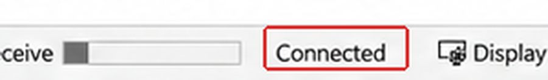
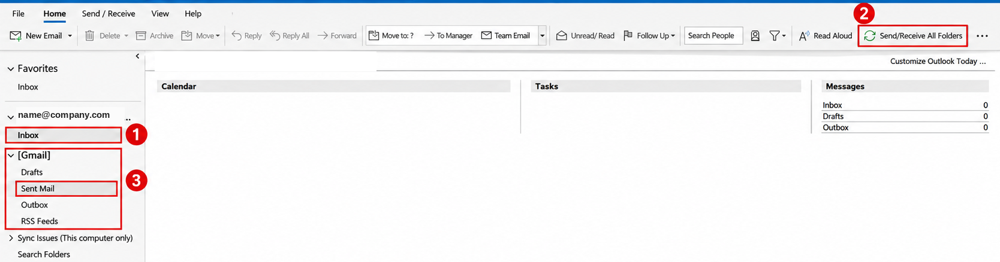

FINISH / 06
Check connection and synchronization
After adding the account, check the connection and confirm messages are arriving.
01
Check the connection status
Look for Connected at the bottom of Outlook, then continue with the checks below.

Where to find folders and synchronization

Red markers: 1 Inbox · 2 Send/Receive All Folders · 3 Sent Mail
02
Open Inbox
Select Inbox under your work email account.
03
Synchronize
Select Send/Receive All Folders.
04
Wait for messages
Allow a few minutes for Gmail messages to synchronize.
05
Check sent messages
In the folder pane, expand [Gmail] and select Sent Mail.
06
Send and receive a test email
Send a test email from Gmail to the added account, then check that it arrives in Outlook Inbox.